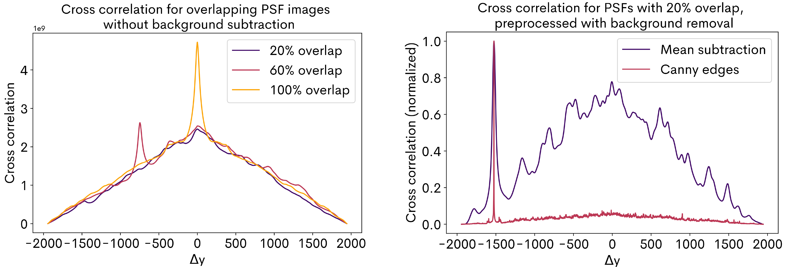
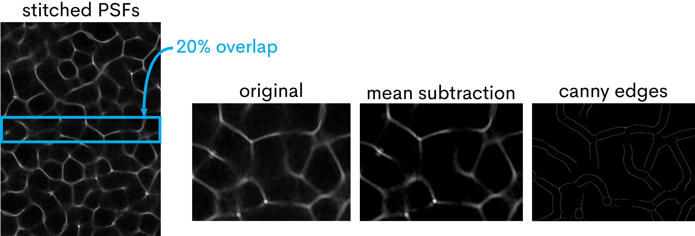

Technical approach

PSF acquisition: The imaging system is characterized by a caustic pattern created by a single on-axis point source; this pattern is called a point-spread function (PSF). When a point source in the scene is shifted, the sensor images a shifted PSF [1]. The synthetic sensing area is larger than the actual sensing area, so the PSF cannot be acquired in a single shot; instead, a single sensor images a laterally shifting point source and the resulting set of images is stitched together to obtain the full diffuser profile. Adjacent images contain overlapping sections of the diffuser and are related by a translational transform, suggesting that the images can be stitched using a cross correlation-based algorithm. Applying cross correlation (XC) on the raw images can sometimes fail because the background of the PSF is non-zero, and thus the cross correlation metric of similarity inaccurately increases as overlap area increases. To combat this, we preprocess the image to remove the background (using mean subtraction or edge detection [2]), and then proceed with cross correlation.
 Sensor orientation: The sensor measurements must be oriented correctly relative to one another in order to reconstruct the scene. This problem is approached from an image registration perspective: each sensor in the array images an on-axis point source, obtaining a sub-PSF, and determining the sensor orientations is the same as registering the sub-PSFs against the full PSF. Many image registration methods exist [3], although feature-based and iterative intensity-based methods tend to fail in this case because of the size of the fixed image relative to the template image and the pseudorandom nature of the PSF. Due to the physical layout of the system, the sub-PSFs should be registered with only a rigid transformation. With $-\epsilon \leq \theta \leq \epsilon, 180 -\epsilon \leq \theta \leq 180 + \epsilon$, $\epsilon \approx 10^{\circ} $, $s$ as the sub-PSF and $t$ as the full PSF, the optimization problem below represents how we solve for sensor orientation: $$ \hat{\theta} = \arg\!\max_{\theta} \left\{ \max_{i,j} \left\{ \text{NCC}(\text{rotate}(s, \theta), t) \right\} \right\} $$ With $s, t$ downsampled, we iterate within the search space for $\theta$ and find $\hat{\theta}$. Then, we use the normalized cross correlation (NCC) peak to find the optimal translation. NCC is used rather than cross correlation because the intensity changes between orientataion images and the PSF and NCC is known to handle intensity changes better [4]. This approach is actually faster than aforementioned registration methods because our search space of transformations is fairly small, and we can use a GPU to further optimize runtime.